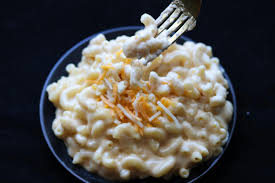

Macaroni And Cheese
Home

Description
Herein lies the recipe to create the most ooey gooey mac-n-cheese. The pasta and cheese are made from scratch to ensure no shenanigans have been added
to our diet in order to mind control or poison us.
Ingredients
- 2 cups All-Purpose Flour
- 3 Large Eggs
- .5 teaspoon Salt
- 1 tablespoon Olive Oil
Steps
- Mound the flour on a clean work surface or in a large bowl. Create a well in the center and add the eggs, salt, and olive oil (if using).
- Use a fork to gently whisk the wet ingredients, gradually incorporating flour from the inner walls of the well until a thick, shaggy dough forms.
- Use your hands to bring the dough together and knead for 8 to 10 minutes until it is smooth, elastic, and springs back when pressed.
- Wrap the dough tightly in plastic wrap or cover it with a clean kitchen towel to prevent it from drying out.
- Let it rest at room temperature for at least 30 minutes to allow the gluten to relax, making it easier to shape.
- Take a small piece of dough and roll it around a floured rod, applying gentle pressure to create a tube shape. Gently slide the noodle off the rod.
- Cut the long tubes into smaller, traditional elbow-sized pieces.
- Place the shaped macaroni on a floured baking sheet, ensuring they are spread apart to dry slightly while you finish the rest of the dough.
- Bring a large pot of generously salted water to a rolling boil (it should taste like the ocean). Do not add oil, as it prevents sauce from sticking.
- Add the fresh macaroni to the boiling water and stir gently to prevent sticking. Fresh pasta cooks quickly, typically in 2 to 4 minutes until al dente.
- Drain the pasta (reserving some starchy pasta water for your sauce, if desired) and toss immediately with a cup of shredded cheddar cheese.